화력조선,
진주성 총통의 기억
2025.08.29(금) ~ 08.31(일) 18:00 ~ 22:00 | 진주성 일원

진주의, 8야(夜)
야경(夜景)
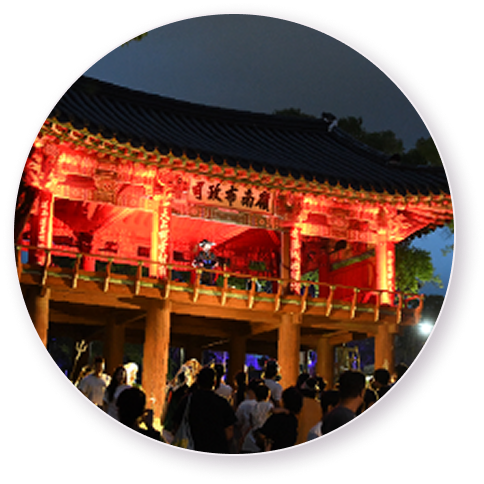
야로(夜路)
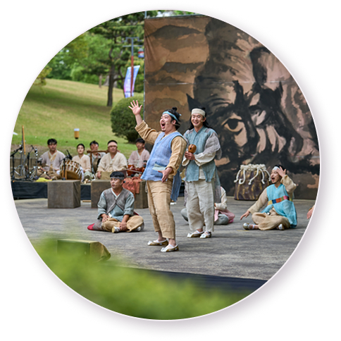
야사(夜史)
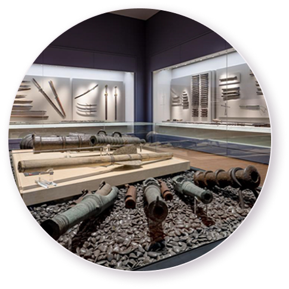
야화(夜畵)
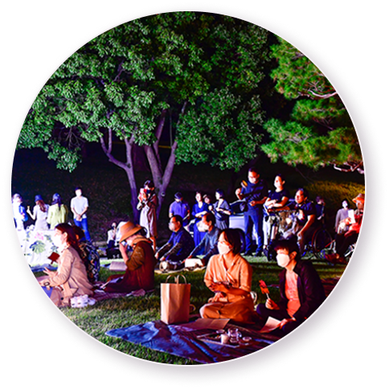
야설(夜說)
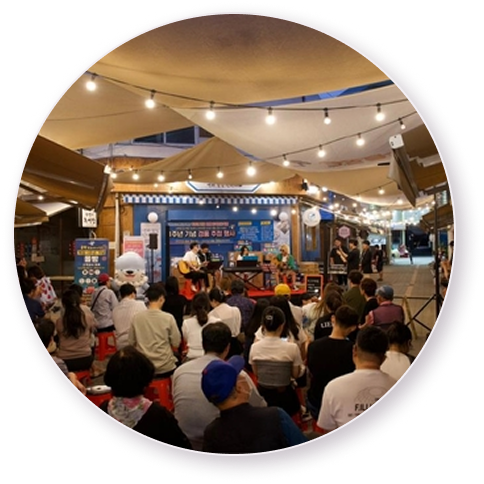
야식(夜食)
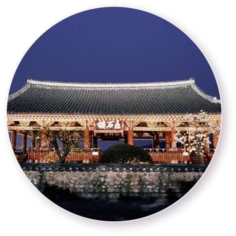
야시(夜市)
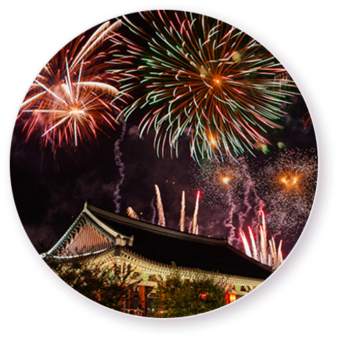
야숙(夜宿)
진주의, 8야(夜)
야경(夜景)
#전쟁터로 간 민초 #김시민호
진주성 경관 조성, 8야를 상징하는 8개의 달
진주의 명물 실크를 활용하여 거점과 거점을 잇는 자연스러운 동선 연출,
김시민호를 즐겨보세요.
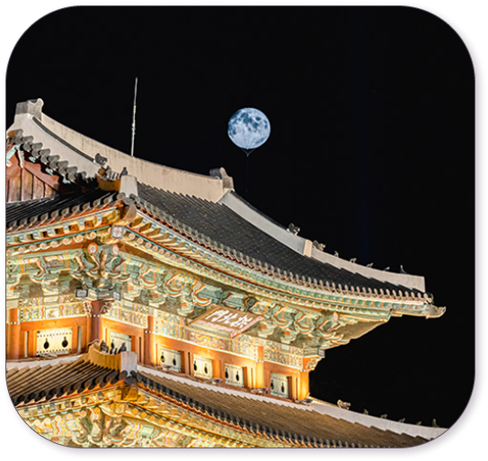
진주의, 8야(夜)
야로(夜路)
#진주성도를 따라서 #화력조선 #야간임무
진주성도를 따라, 화력(火力)조선,
야간임무를 즐겨보세요.
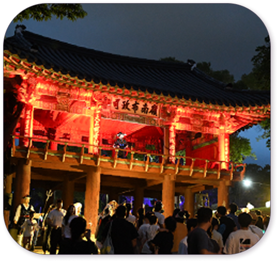
진주의, 8야(夜)
야사(夜史)
#나의 조선이름이요? #진주성 ‘어린이 수성군’ #홀로그램
문화유산 연계 만들기 체험,
진주대접 체험을 즐겨보세요
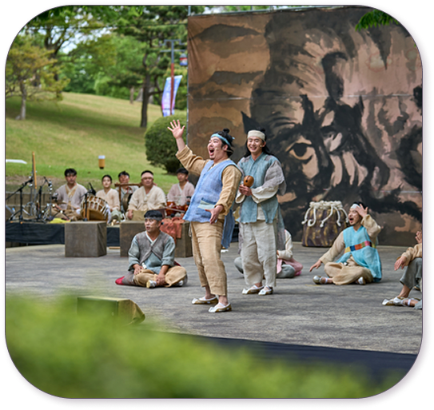
진주의, 8야(夜)
야화(夜畵)
#화력(火力)조선 #포토존 #진주성
이색 포토존, 국립진주박물관,
진주역사 상영 LED를 즐겨보세요
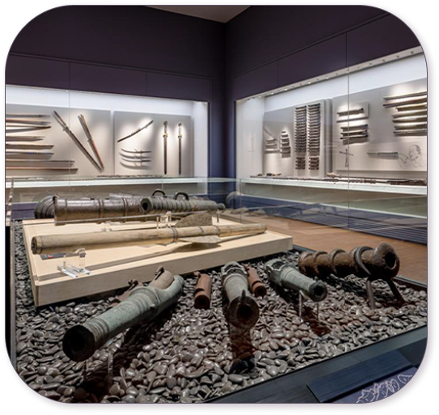
진주의, 8야(夜)
야설(夜說)
#무형유산 #성안 저잣거리의 놀이판 #역사강연
진주무형유산 공연 및 시연
역사재현 퍼포먼스를 즐겨보세요
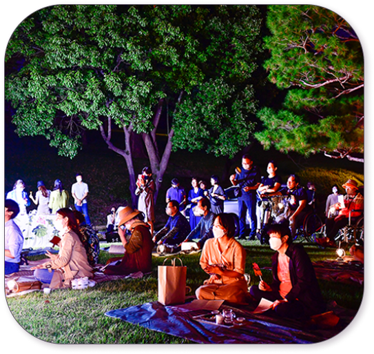
진주의, 8야(夜)
야식(夜食)
#올빰야시장 #브루어링 #야시장
진주 논개시장에서 열리는
특별한 경험, 올빰야시장!
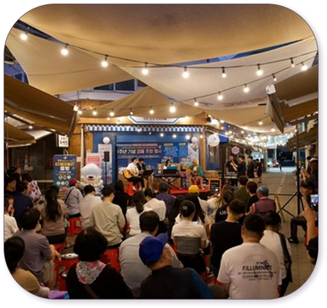
진주의, 8야(夜)
야시(夜市)
#성안저작거리 #플리마켓 #먹거리
진주성 야외공연장에서만 열리는
저잣거리를 즐겨보세요
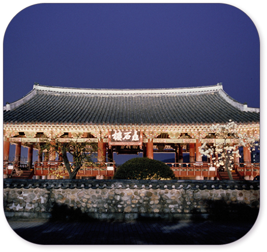
진주의, 8야(夜)
야숙(夜宿)
#진주에서 #하룻밤
진주성 외성에 위치한
숙소에서 하룻밤 어때요?
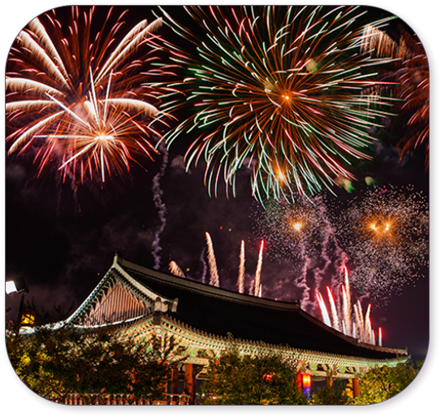
진주의 밤을, 기억하다
8야(夜)와 국가유산야행에서 관광일기를 기록하는 문화탐방!
진주의 밤을 즐기는 사람들의 빛나는 추억이 담긴 갤러리를 감상해보세요.


진주의 밤을, 거닐다
참여 국가유산과 안내책자를 살펴보고, 진주의 빛나는 밤을 거닐어보세요!
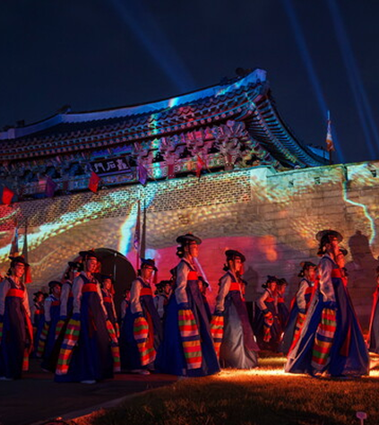
진주국가유산여행,
국가유산참여현황을 확인하세요!
참여국가유산
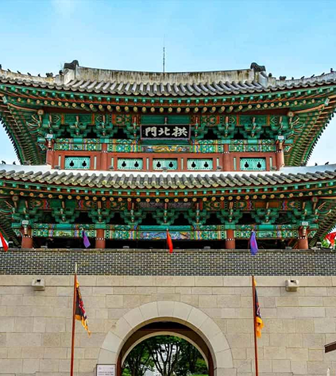
진주국가유산야행
행사정보를 확인하세요!
행사장 안내
진주의 밤을, 기록하다
내가 만드는 국가유산야행이야기, 진주의 밤을 기록해보세요.
@jjnight를 태그해서 게시물을 올려주세요! SNS추첨을 통해 하모 MD를 증정합니다.